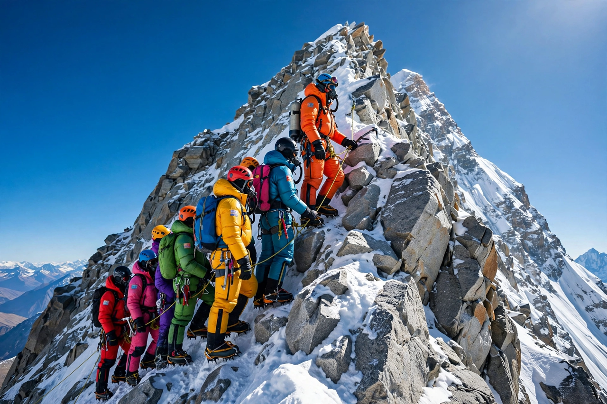

Mount Everest
Mount Everest, known officially in Nepali as Sagarmatha and in Tibetan as Chomolungma, is Earth's highest mountain above sea level. It lies in the Mahalangur Himal sub-range of the Himalayas, and the international border between Nepal and the Tibet Autonomous Region of China runs across its summit point. Its elevation was established as 8,848.86 metres (29,031.7 ft) by a joint Nepalese–Chinese survey announced in 2020.
The mountain attracts climbers of widely varying experience, including highly experienced mountaineers on guided expeditions. Its altitude makes the upper mountain part of the so-called "death zone", where there is insufficient oxygen to sustain human life for long, and it presents dangers from altitude sickness, extreme weather and falls. Crowding on the standard routes, the cost of permits, and waste left on the mountain have all attracted sustained criticism.
- Names and etymology
- Survey history
- Geology
- Climbing
- Death zone
- Environmental issues
- See also
Names and etymology
The Tibetan name Chomolungma means "Holy Mother" or "Goddess Mother of the World". The Nepali name Sagarmatha, coined in the 1960s, is commonly interpreted as "forehead of the sky" or "peak of heaven". The English name honours George Everest, Surveyor General of India from 1830 to 1843, despite Everest's own objections to the practice of naming the peak after him.
Survey history
In 1856, the Great Trigonometrical Survey of India established that "Peak XV" was the highest summit in the world, based on calculations by the mathematician Radhanath Sickdar, who computed its height as exactly 29,000 feet in 1852 — a figure the survey reportedly published as 29,002 feet so it would not look like a rounded estimate. Successive surveys refined the figure, with the 2020 joint Nepal–China measurement using GPS receivers and ground-penetrating radar at the summit.
Geology
Everest is still rising by a few millimetres a year as the Indian tectonic plate drives northward into Asia, the collision that raised the Himalayas beginning roughly 50 million years ago. The summit rocks are marine limestones originally deposited on an ancient seabed — a fact often cited as vivid evidence of plate tectonics.
Climbing

[Image: climbers queued on the Hillary Step, a rocky outcrop just below the summit]British expeditions reconnoitred the mountain in the 1920s from the Tibetan side. George Mallory and Andrew Irvine disappeared high on the mountain in 1924, and whether they reached the summit remains debated. The first confirmed ascent was on 29 May 1953, when Edmund Hillary of New Zealand and the Sherpa mountaineer Tenzing Norgay reached the top via the South Col route, as part of a British expedition led by John Hunt. The news reached London on the morning of Queen Elizabeth II's coronation.
Most ascents today follow either the southeast ridge from Nepal — passing the Khumbu Icefall, the Western Cwm, the Lhotse Face and the South Col — or the north ridge from Tibet. Thousands of people have now summited, and in busy seasons queues form at bottlenecks such as the Hillary Step.
Death zone
Above 8,000 metres, climbers enter the "death zone", where the available oxygen is about a third of that at sea level. The human body cannot acclimatise at this altitude and deteriorates even at rest; most climbers use bottled supplemental oxygen above this height. Reinhold Messner and Peter Habeler made the first ascent without supplemental oxygen in 1978.
Environmental issues
Everest lies within Sagarmatha National Park on the Nepalese side. Decades of expeditions have left tonnes of rubbish, spent oxygen bottles and human waste, prompting clean-up expeditions and rules requiring climbers to carry their waste down. The Khumbu Glacier near base camp also moves and melts, periodically exposing remains of climbers who died on the mountain.
See also
- K2 — the world's second-highest mountain
- Seven Summits
- Sherpa people
- Kathmandu — gateway city for most expeditions